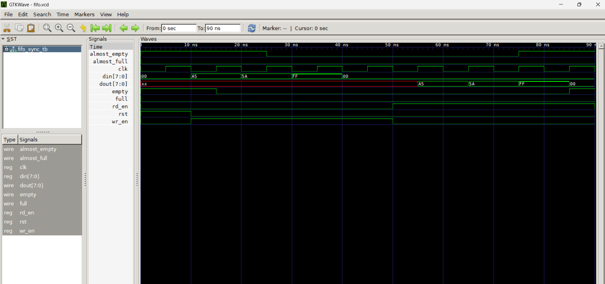

Depth: 8 | Width: 8 | Flags: full, empty, almost_full, almost_empty
fifo_sync.v)module fifo_sync #(
parameter DEPTH = 8,
parameter WIDTH = 8
) (
input clk, rst,
input wr_en, rd_en,
input [WIDTH-1:0] din,
output reg [WIDTH-1:0] dout,
output full, empty,
output almost_full, almost_empty
);
localparam PTR_WIDTH = $clog2(DEPTH);
reg [WIDTH-1:0] mem [0:DEPTH-1];
reg [PTR_WIDTH-1:0] wr_ptr, rd_ptr;
reg [PTR_WIDTH:0] count;
always @(posedge clk or posedge rst) begin
if (rst) begin
wr_ptr <= 0;
rd_ptr <= 0;
count <= 0;
end else begin
if (wr_en && !full) begin
mem[wr_ptr] <= din;
wr_ptr <= wr_ptr + 1;
count <= count + 1;
end
if (rd_en && !empty) begin
dout <= mem[rd_ptr];
rd_ptr <= rd_ptr + 1;
count <= count - 1;
end
end
end
assign full = (count == DEPTH);
assign empty = (count == 0);
assign almost_full = (count >= DEPTH - 1);
assign almost_empty = (count <= 1);
endmodulefifo_sync_tb.v)`timescale 1ns/1ps
module fifo_sync_tb;
reg clk, rst, wr_en, rd_en;
reg [7:0] din;
wire [7:0] dout;
wire full, empty, almost_full, almost_empty;
fifo_sync #(.DEPTH(8), .WIDTH(8)) uut (
clk, rst, wr_en, rd_en, din, dout,
full, empty, almost_full, almost_empty
);
always #5 clk = ~clk;
initial begin
$dumpfile("fifo.vcd");
$dumpvars(0, fifo_sync_tb);
clk = 0; rst = 1; wr_en = 0; rd_en = 0; din = 0; #10;
rst = 0;
// write 4 bytes
wr_en = 1; din = 8'hA5; #10; din = 8'h5A; #10; din = 8'hFF; #10; din = 8'h00; #10;
wr_en = 0;
// read 4 bytes
rd_en = 1; #40; rd_en = 0;
$finish;
end
endmodule
Waveform showing write, read, full/empty flags.
iverilog -o fifo.vvp fifo_sync.v fifo_sync_tb.vvvp fifo.vvpgtkwave fifo.vcd